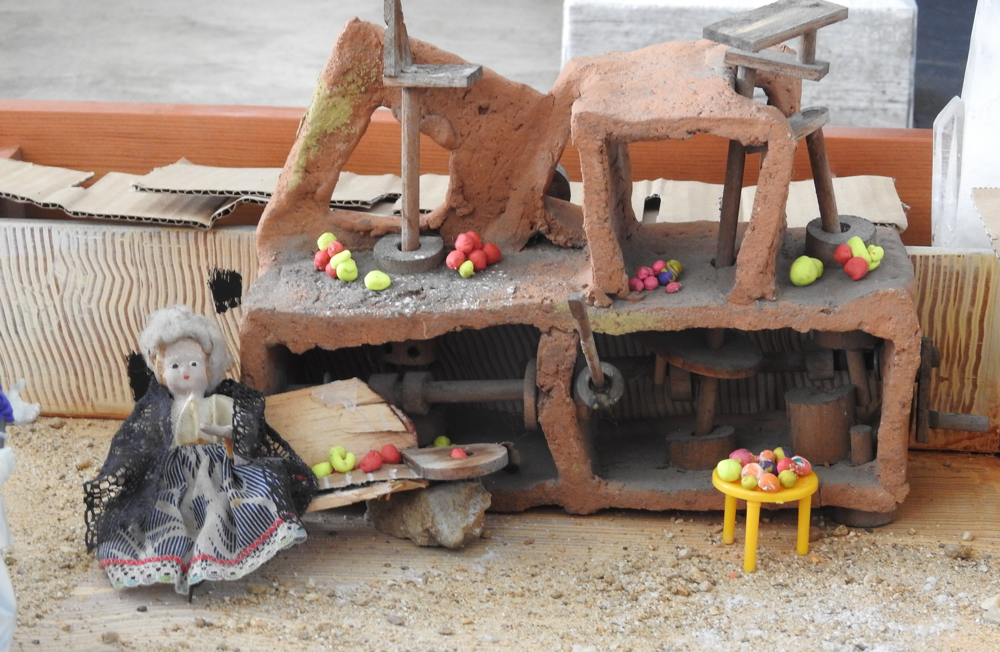

Introducción
Ya entrando de lleno en la era moderna, y acercándonos más y más al presente, en esta semana abordo el barroco: un movimiento artístico predominante durante los siglos XVII y XVIII. La obra que abordo es la Historia de la vida del buscón, por Francisco de Quevedo; es un buen ejemplo de una novela picaresca, el tipo de texto predominante durante la época. En esta semana experimento con los encuadres; además, continuando con mi trabajo en la semana 3, esta vez elaboro un diorama representando la escena, y las fotos serán de diferentes ángulos y secciones de este diorama.
Diorama


Este diorama es muy detallado, así que lo explicaré por partes antes de mostrar las fotos.
- Lo primero que se destacan son las casas y las rocas: no se usa un fondo plano. Para simular las casas de un solo piso utilicé cartón para actuar como techo; para casas más altas utilicé objetos que encontré alrededor de la casa, y las puertas y ventanas fueron pintadas manualmente. También incluí rocas y otros objetos para actuar como un fondo natural (e.g montañas). Los hilos alrededor de la escena son festones, para marcar el ambiente festivo.
- La escena principal es Pablo siendo perseguido por un alguacil, mientras Diego mira en la distancia; esto es basado en los acontecimientos descritos en la página 4 (versión de la Biblioteca Virtual Universal), en donde Pablo montó un caballo (en este caso representado por un burro) al desfile del carnaval, accidentalmente tirando un repollo de un estante de verduras al suelo y generando caos gracias a la ira de la señora del estante, a lo cual eventualmente acudió la justicia.
- El estante de verduras también se muestra: usé una maqueta pequeña que mi papá tenía guardada, y las frutas y verduras fueron elaboradas con plastilina.
- También se destacan algunas escenas secundarias, para dar efecto de carnaval: un señor promocionando sus pájaros en venta, que están en una jaula; un señor grande y gordo con máscara a punto de pelear con dos enanos furiosos, uno montado encima de otro (las peleas eran algo común en los carnavales durante esos tiempos); un niño haciendo demostraciones de artes marciales; y un abuelo sentado en una banca cantando con una guiterra.
- Los personajes fueron todos representados usando muñecos y juguetes que mi papá tenía en su estudio, a excepción de Pablo y el alguacil: para estos se tomó un muñeco existente como base, al cual se le agregó alguna vestimenta (el alguacil con plastilina e hilos de tela y a Juan con cinta de enmascarar). El terreno se simuló complementando el color de la madera, que ya era amarillenta, con arena que mi papá guardaba dentro de una bolsa.
- Debo agradecer mucho a mi padre en la elaboración de esta maqueta: gracias a la extensiva cantidad de materiales que el ha guardado durante el tiempo para sus proyectos artísticos, fue mucho más fácil elaborarla. Además, aunque yo escogí los diferentes materiales, boceté la escena y determiné la posición de los materiales para crearla, mi papá y mi mamá ayudaron con la parte manual de la elaboración, especialmente con tareas difíciles como decorar a los muñecos de Juan y el alguacil. No podría haber hecho esta maqueta sin ellos, y realmente fue una muy agradable experiencia en familia.
Ahora sí, a las fotos:
Pablo a la fuga

Vino la justicia, comenzó a hacer información, prendió a berceras y muchachos, mirando a todos qué armas tenían y quitándoselas, porque habían sacado algunos dagas de las que traían por gala, y otras espadas pequeñas. (p. 4)
El encuadre en esta foto es inclinado, en la dirección en la que Pablo está girando: esto para dar un efecto de desequilibro y movimiento. Nótese que el alguacil mismo no aparece completamente: de lo contrario se le quitaría el énfasis a Pablo, pasando también al alguacil, y destruyendo el efecto que se desea obtener. Sin embargo, aún se muestra la mayor parte de su cuerpo, incluyendo su arma, así que aún se entiende el contexto de la escena (una persona huyendo de otra que le quiere hacer daño).
Pelea en el carnaval

El encuadre en esta foto es vertical: así se genera un efecto de imposición y firmeza para el hombre grande. Esto no significa que se esté menospreciando al enano; de hecho, la textura de la piel del enano, su pose y el contraste comparado con el hombre grande también le brindan énfasis a este. Las peleas eran muy comunes en los carnavales en la época medieval (fuente), así que es probable que aún lo fuesen en el siglo XVI (en el que toma lugar la historia), por lo que se decidió agregar esta escena al diorama.
(Nota: técnicamente el enano no está solo, sino está montado encima de otro enano, el cual no se muestra en la foto; no consideré que este cambio perjudicara la foto ni el efecto que produce, así que no le presté atención. El lector puede considerar al enano como desee, sea solo o montado en otro enano)
La vendedora de verduras
Pasamos por la plaza (aun de acordarme tengo miedo), y llegando cerca de las mesas de las verduras (Dios nos libre), agarró mi caballo un repollo a una (...) La bercera (que siempre son desvergonzadas) empezó a dar voces; llegáronse otras y, con ellas, pícaros, y alzando zanorias garrofales, nabos frisones, tronchos y otras legumbres, empiezan a dar tras el pobre rey [Pablo]. (p. 4)
El encuadre en esta foto es horizontal: esto genera una sensación de quietud y calma, a la cual también ayuda el contexto (la abuela y las frutas y verduras). Aunque esta escena está posicionada en el diorama junto a la escena de la persecución de Pablo (y se puede interpretar así, ya que los alguaciles habían detenido, regañado y cogido las armas de los participantes de la riña), también se puede interpretar como occuriendo ántes de la riña - de hecho, esto es una mejor interpretación, ya que conserva ese sentimiento de calma que deseo lograr, mientras que en el otro caso es menos calma y más obediencia y temor a la justicia.